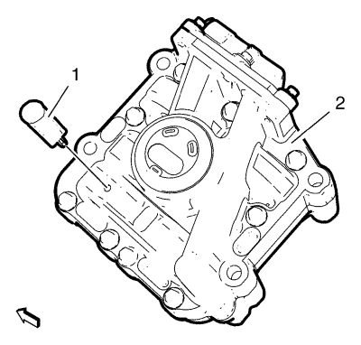
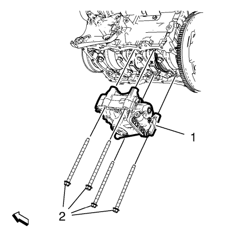
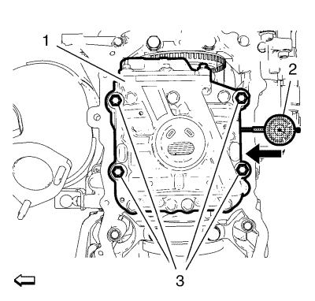
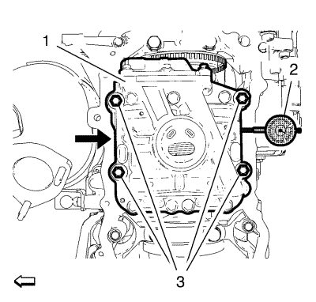

Montaje del balancín del cigüeñal
Herramientas especiales
| • | EN-50430 Pasador - Seguro del módulo del eje compensador |
| • | EN-50431 Adaptador - Medición de la holgura |
Si desea informarse sobre herramientas regionales equivalentes, consultar Herramientas especiales .
- Coloque el pistón del cilindro n.º 1 en el P.M.S. de encendido.

- Monte el pasador de bloqueo EN-50430 (1) y bloquee el engranaje del módulo del eje compensador (2).

- Monte el módulo del eje compensador (1) en la carcasa del cigüeñal inferior.
Nota: Monte los tornillos de retención del módulo del eje compensador en cruz.
- Monte 4 tornillos de retención del módulo del eje compensador (2). Apriete los tornillos (2) únicamente hasta el punto en el que el módulo del eje compensador (1) siga deslizándose sobre la carcasa del cigüeñal inferior.
- Retire el pasador de bloqueo EN-50430.

- Empuje el módulo del eje compensador (1) hacia el lado de escape del motor.
- Monte un comparador (2) en el lado de admisión del módulo del eje compensador.
- Coloque el comparador en cero.

- Coloque el arrastrador (1) en el lado de escape tal y como se muestra en el gráfico, y empuje el módulo del eje compensador (2) 1,1 mm (0,039 pulg.) hacia el lado de admisión.
Precaución:Consulte Precaución con las fijaciones en la sección Prólogo.
Nota: Apriete los tornillos de retención del módulo del eje compensador en cruz.
- Apriete los tornillos del módulo del eje compensador (2) a 20 N·m (15 lib. pie).
- Consulte las especificaciones de holgura del módulo del eje compensador. Consultar Limpieza e inspección del compensador del cigüeñal .
- Apriete los tornillos del módulo del eje compensador (2) a 50 N·m + 90° (37 lib. pie) + 90°.
| © Copyright Chevrolet. All rights reserved |